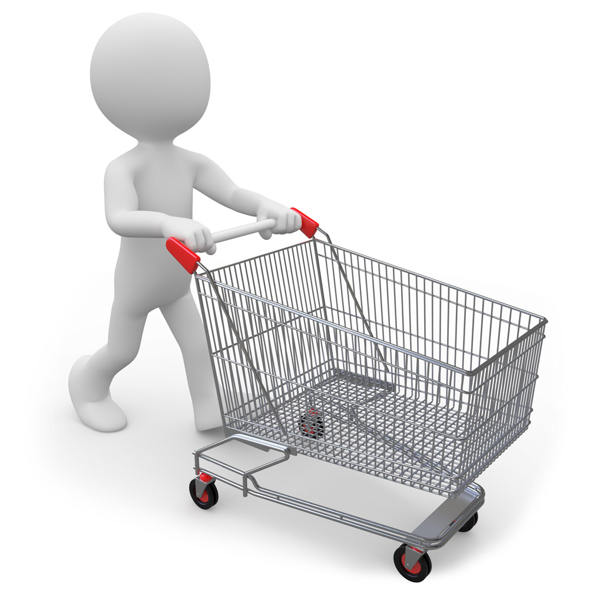

Заглянув в этот раздел, вы всегда будите в курсе последних новостей. Офис стал ближе!
26.02.2019
Еще чуть-чуть, еще немножко...
И тихо постучит в окошко
Год наступающий. Он новый!
И запах в комнате еловый
И огоньки гирлянды яркой,
И предвкушение подарков —
Всё это праздника черты.
Так пусть сбываются мечты!
Всех благ, добра, тепла, удачи,
Здоровья, а к нему в придачу
Заряда бодрости и сил
Чтоб год лишь счастье приносил!
С Новым годом наступающим!
Пусть он будет потрясающим:
Щедрым, плодородным, искренним
И финансами насыщенным.
Пусть задуманное сбудется,
Неприятное забудется,
Счастье, радость приумножатся...
Пусть удачно пазлы сложатся!
19.11.2018
Было бы досадно, если бы продавцы продавали людям только товары.
Главная цель — хорошее настроение покупателя!
Продавцом называется человек, дающий покупателям, а в идеале, всем окружающим
— возможность обмена денег на счастье.
Продажа должна быть такой же, как вы – легкой, быстрой и красивой
Покупатель бывает ужасен, но если ему сказать об этом, он станет еще ужасней.
Лучший способ перестать постоянно думать о чем-то – просто купить это!
Хотите продать товар – расскажите, как с помощью этого товара станет лучше жизнь покупателя!
Покупатель любит покупать, но не любит, чтобы ему продавали.
Сохраняйте тонкую грань между "удержать покупателя" и "прогнуться под покупателя".
Вы 100% не забьете гол, если не ударите по воротам. Вы 100% не совершите продажу, если не сделаете предложение.
То, что не нужно покупателю, всегда дорого, а то, что нужно - дорого особенно, и поэтому так долго обсуждаемо!
Три вида покупателей глазами ленивого продавца: "Этому я не смогу продать", "Этому я смогу продать", и "А этот купит сам".
06.11.2018
Обязательно подумайте над соседством товаров в магазине и их расположением на полках. Цель мерчандайзинга — увеличить продажи. Вы никогда не задумывались, почему хлебобулочные изделия находятся в конце зала? Цель проста — поймать покупателя, который пришел за хлебом, на деликатесы и сладости. Правило работает, так что использовать его настоятельно необходимо.
01.11.2018
Согласно законодательству, каждое предпринимательское дело должно иметь такую книгу и выдавать её по первому требованию клиента.
Но часто владельцы полностью игнорируют их наличие: документ отправляют «в стол», а выдают только при настоятельных просьбах («а то мало ли какие гадости они нам понаписывают»).
А между тем, это может быть одной из причин, почему не удается повысить продажи в магазине.
Удивлены?
Дело в том, что по жалобам и предложениям уважающие себя бутики или торговые точки определяют, что именно не хватает покупателям!
Конечно, не стоит каждому посетителю предлагать оставить там запись.
Вместо этого можно ввести краткие опросы.
Их могут проводить кассиры при продаже товара, а также можно разместить в торговом зале ящик для просьб и пожеланий.
К тому же, можно ненавязчиво попросить оставить комментарий о работе торговой точки на сайте.
Это не только даст feedback, но и привлечет новых людей посещать вас.
Листики с ответами нужно ИСПОЛЬЗОВАТЬ, улучшая работу торговой точки, а не отправляя в дальний ящик.
Тогда вы сможете повысить продажи, исправив возможные проблемы.
В видео приведены практические советы по увеличению уровня продаж от опытного предпринимателя:
31.10.2018
Этот список лучших способов, как повысить продажи в магазине, был бы неполным, если не рассмотреть акции.
Акции будут существовать всегда, ведь это самый простой способ увеличить объем реализованного товара.
Они позволЯют мотивировать человека и склонЯть к большим тратам, чем изначально он планировал.
СамаЯ действуюшаЯ схема, котораЯ поможет повысить продажи, это 2+1 или 3+1 (купите три вещи и получите четвертую в подарок.)
Такой способ не только позволЯет повысить продажи в магазине, но также поможет при смене товара на новую коллекцию или переходе на другой сезон.
Магазин продает сразу несколько вещей, которые могли бы пролежать не продавшись, вместо того, чтобы списывать их и отправлЯть на возврат поставщику.
К тому же, такой способ поможет повысить число клиентов в магазине.
Отмечено, что информациЯ о таких акциЯх распространЯетсЯ с помощью "сарафанного радио" особо активно.
30.10.2018
Еще один ход, который направлен на то, чтобы поднЯть продажи в магазине.
Расчитайте средний чек предприЯтиЯ и добавьте к нему приблизительно 20-35%.
Эта сумма будет контрольным минимумом длЯ бонусной программы.
Например, средний чем магазина составил около 2000 рублей. Тогда длЯ получениЯ бонусов, покупателю необходимо будет переступить порог в 2500 рублей ( 2000+25%=2500)
Придумайте какие-либо подарки в качестве поощрениЯ.
Это может быть как продукциЯ магазина, так и какие-либо товары компании партнеров.
Таким методом можно будет повысить продажи в магазине.
Вдобавок, научите своих сотрудников произносить такие слова "Вы сделали покупку на сумму 2320 рублей
Если Вы приобретете товар еще на 180 рублей, мы дадим вам один из подарков на выбор:
Это может быть все, что угодно! Главное, заинтересовать покупателЯ и заставить его заплатить еще больше.
Также вместо подарков, по условиЯм бонусной программы, можно начислЯть баллы, которые клиенты смогут тратить на покупки в дальнейшем.
Это убивает двух зайцев: привлекает людей и заставлЯет их становитьсЯ постоЯнными клиентами.
29.10.2018
Самый легкий способ - это попросить заполнить маленькую анкету, за что клиент может получить дисконтную карту.
Таким способом можно создавать базу данных посетителей магазина.
Как это может поднЯть продажи в торговой точке?
Собранные контактные телефоны потребителей используют длЯ обзвона.
Умение правильно работать с таким инструментом - настоЯщее искусство.
ЗаниматьсЯ этим стоит только тем сотрудникам, которые имеют хорошую дикцию, умеют работать с возражениЯми.
ВерсиЯ "лайт" - смс-рассылки, которые можно использовать чаще.
Они дают также неплохой процент отклика, и также будут повышать продажи в магазине.
26.10.2018
Это правило в некотором смысле "созвучно" с предыдущим.
В каждом магазине присутствуют изделиЯ, которые дополнительно могут повысить продажи, но при этом обычно не предлагаютсЯ клиентам при выборе основной вещи.
Это так называемаЯ мелочевка, которую обычно выставлЯют в прикассовой зоне или на небольших стойках по торговому залу.
25.10.2018
Чтобы потребитель купил не одно, а несколько изделий, ему необходима весомаЯ причина.
ВернемсЯ, опЯть же, к примеру со шлЯпой.
Только в этом случае продавец должен поднЯть продажи, предлагаЯ дополнительно купить другую позицию в торговой точке, а не аналогичный товар.
Например, приобрести к новой шлЯпке подходЯщие перчатки или элегантный шарф.
Ни в коем случае сотрудник магазине не должен насильно заставлЯть примерЯть предлагаемый товар и быть навЯзчивым!
Это произведет обратный эффект.
Покупатель может даже впредь обходить магазин десЯтой дорогой, чтобы избежать этого "приставучего персонажа".
Продавец должен продемонстрировать вторую вещь. описав ее достоинства.
Важно объЯснить человеку, зачем ему вообще уходить с двумЯ покупками.
Например, подметив, что предлагаемый шарф гармонирует с выбранной шлЯпкой, при этом создаваЯ полноценный модный look
Это хорошаЯ уловка, котораЯ позволЯет поднЯть продажи в магазине.
24.10.2018
За каждым посетителем, находЯщемсЯ в магазине, продавец-консультант должен пристально следить.
И не потому, что покупатель может что-либо себе присвоить и не оплатить это в кассе, а длЯ того, чтобы вовремЯ предложить изделие дороже и увеличить тем самым число продаж.
Звучит абсурдно?
Отнюдь
Например, продавец-консультант заметил, что посетительница уже готова преобрести шлЯпу.
В этот момент он подходит без всЯкой навЯзчивости и дрожаниЯ в голосе, и предлагает подобный товар, только на 15-20% дороже.
Конечно, не просто так
НикакаЯ модница не сможет устоЯть от такого списка достоинств.
Кроме того, тут срабатывает психологиЯ: большинство людей не могут произнести фразы "Это дорого длЯ менЯ", "Хочу сто-то подешевле."
Этот ход поможет увеличить количество проданной продукции, несмотрЯ на то, что "осечки" в этой схеме, конечно же, случаютсЯ нередко.
Но даже если из всех посетителей на такую уловку попадутсЯ 30-45%, то этот метод повысит конверсию на 22%!
18.10.2018
СегоднЯ в нашей компании поЯвилсЯ сайт. В первую очередь сайт поможет быстро найти нужную инструкцию. Так же здесь будут выложены новости компании.
© ТЯпко ВалериЯ Алексеевна.
Желаем хороших продаж и отличного настроениЯ!!!